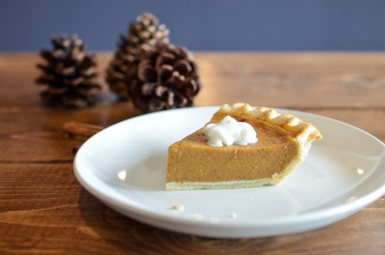

Tarte au sucre avec pâte brisée
Préparation: 15 minutes
Cuisson: 25 minutes
Ingrédients
- Garniture
-
1.25 t de cassonade

-
2 c. à soupe de fécule de maïs
-
2 c. à soupe de farine
-
250 mL de crème (35%)
-
1 oeuf
- Pâte brisée
-
1 1/8 t de farine
-
1/8 c. à thé de sel
-
6 c. à soupe de beurre non salé froid
-
3 c. à soupe d'eau glacée
Instructions
Pâte brisée
Dans un grand bol, mélanger la farine et le sel.
- 1 1/8 t de farine
- 1/8 c. à thé de sel
Couper 6 c. à soupe de beurre non salé froid en dés et l'incorporer dans la farine à l'aide d'un coupe-pâte ou de deux couteaux afin d'obtenir une texture granuleuse où l'on distingue de petits morceaux de beurre de la grosseur de petits pois.
Incorporer 3 c. à soupe d'eau glacée graduellement en mélangeant délicatement et en évitant qu'une partie ne devienne plus mouillée qu'une autre.
Ajouter petit à petit de l'eau au besoin jusqu'à ce que le mélange se tienne lorsqu'on le presse entre les doigts. Former un disque épais.
Recouvrir et réfrigérer la pâte 30 minutes.
Sur un plan de travail fariné, abaisser la pâte pour former une croûte de 23 cm (9 po) de diamètre.
Garniture
Placer la grille dans le bas du four. Préchauffer le four à 190 °C (375 °F).
Dans une casserole, hors du feu, mélanger la cassonade et la fécule de maïs.
- 1.25 t de cassonade
- 2 c. à soupe de fécule de maïs
Ajouter le reste des ingrédients et bien mélanger.
- 2 c. à soupe de farine
- 250 mL de crème (35%)
- 1 oeuf
Cuire à feu moyen jusqu'à ébullition et épaississement.
Déposer la pâte dans un moule à tarte et verser la garniture. Cuire au four environ 25 minutes.